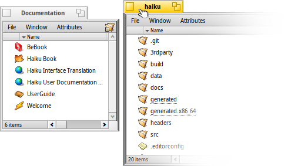

日本語
日本語 Français
Français Deutsch
Deutsch Italiano
Italiano Русский
Русский Español
Español Svenska
Svenska Українська
Українська 中文 ［中文］
中文 ［中文］ Português
Português Suomi
Suomi Slovenčina
Slovenčina English
English| インデックス |
|
すばやくウィンドウを移動またはリサイズする方法 Stack & Tile 読み込み・保存パネル レプリカント |
Haiku のグラフィカルユーザーインターフェース
Haiku のグラフィカルユーザインタフェースはシステムと統合されています。Unix ベースのオペレーティングシステムとは異なり、独立したウィンドウマネージャを持っていないので、コンソールモードで直接ブートすることはできません。Haiku はデスクトップユーザに主眼を置いているので、ただ単純にコンソールモードは必要でないと考えられています。
おそらくほかのグラフィカルな環境で使ったことがあると思われる、メニュー、右クリックでのコンテキストメニュー、ドラッグ＆ドロップといった標準的な動作はスキップして、代わりに Haiku のグラフィカルユーザインタフェースに特有のものをいくつか見てみましょう。

Haiku のグラフィカルユーザインタフェースに関して、分かりにくく説明を必要とする部分はごくわずかです。
Deskbar は Haiku の「スタート」メニューとタスクバーです。トピック Deskbar を参照してください。
- 黄色いタブは単にプログラム名やドキュメントのファイル名を表示する以上の働きをします:
「閉じる」ボタン。
「ズーム」ボタン (または CTRL ALT Z )。ほとんどのアプリケーションではウィンドウを最大化します。しかし必ずしもそうなるわけではなく、たとえば、Tracker のウィンドウでは、ウィンドウの内容の表示に最適なサイズにリサイズします。
ウィンドウ枠。左ドラッグでウィンドウの移動、右ドラッグでリサイズします。
リサイズコーナー
 すばやくウィンドウを移動またはリサイズする方法
すばやくウィンドウを移動またはリサイズする方法
ウィンドウの移動やリサイズは、同時に実行している複数のアプリケーションを取り扱う操作の大部分を占めます。 黄色の小さいタイトルタブや、もっと細いウィンドウの枠をねらう代わりに、より簡単にウィンドウを動かす方法があります。 また、リサイズコーナーは小さい上に、右下の角からその方向にしかリサイズできないという制約があります。
ウィンドウ枠の右クリックでリサイズできますが、慎重にねらわないといけません。
こうした問題に対処するために、Haiku は CTRL ALT (ウィンドウを管理するキーの組み合わせ) とマウスを使ったすばらしい解決策を提供しています。ウィンドウ管理に関連するもっと多くのショートカットについては、ショートカットやキーの組み合わせの章も参照してください。

CTRL ALT を押し続けるとマウスポインタにもっとも近いウィンドウの枠がハイライトされます。対象を変更するにはマウスをほかの枠の方向に動かします。右マウスボタンでクリックしてドラッグすると、ハイライトされた枠に沿ってウィンドウをリサイズできます。
CTRL ALT を押しながら左マウスボタンでウィンドウの任意の場所をクリックしてドラッグすると、ウィンドウを動かせます。元の位置に戻すには、右マウスボタンですばやくクリックします。
Stack & Tile (スタック＆タイル)
Haiku のユーザーインターフェースは、ウィンドウがフルサイズのタイトルバーの代わりに黄色のタブを持っているという事実を、完全な利用とするユニークな特徴を提供します。それは、"Stack & Tile (スタック＆タイル)" と呼ばれます。
以下の例において、ブックマークを表示した Tracker ウィンドウが、WebPositive ウィンドウの左側にタイルします。WebPositive ウィンドウ自体は、ソースフォルダー haiku を表示する別の Tracker ウィンドウとスタックしています。
このアニメーションでは、交互に 1 つまたは他方を正面へ持って来るために、ユーザはスタックしたウィンドウのタブをクリックします。
このようにつながっているので、ウィンドウのグループは同時に移動、およびリサイズできます。よりプロジェクト中心の環境で作業するよい配置です。右側のドキュメントとweb ブラウザーウィンドウの代わりに、エディターと Tracker ウィンドウ、そしておそらく作業中のプロジェクトに関する関連する電子メールを、それらと一緒に stack&tile できます。
ウィンドウを実際に配置することは容易です。別のウィンドウのタブか枠の近くまでウィンドウをタブでドラッグしながら、ウィンドウが強調されるまで、OPT を押してください。それから、マウスボタンを離します。
Stack & Tile は、2 つの関連する部分から成ります。
 | "Stacking (スタック)" は、ウィンドウを互いの上に置くことです。黄色のタブは自動的に所定の位置につきます。 |
|  | "Tiling (タイル)" は、ウィンドウを水平方向、または垂直方向に互いをくっつけることです。 |
分離は同じように行えます。ウィンドウをタブでドラッグ中に OPT を押せば、グループの外に出ます。
読み込み・保存パネル
どのようなアプリケーションでも、ファイルを開いたり保存したりする際は以下のようなパネルが開きます。

パネルは一般的な要素をすべて備えています。現在のフォルダー下のファイル選択リスト、保存パネルではファイル名を入力するテキストフィールドと、異なるファイル形式のためのポップアップメニュー、そしてその設定です。
ファイル選択リストの上にあるポップアップメニューで親フォルダーに移動できます。
ファイルを開く場所の Tracker ウィンドウをすでに開いていれば、そのファイルやフォルダー表現 (Tracker メニューバーの右端のフォルダーアイコン) をパネルにドラッグできます。これによって、その新しい場所にパネルを変更できます。
キーボードショートカット
Tracker で利用されるショートカットの多くが、読み込みパネルと保存パネルでも利用できます。メニューを使っても利用できるコマンドに加えて、いくつか分かりにくいコマンドがあります。
| ALT N | 新しいフォルダーを作成します。 | |
| ALT E | 選択した項目の名前を変更できます。 | |
| ALT ↑ | 親フォルダーに移動します。 | |
| ALT ↓ または ENTER | 選択したフォルダーに移動します。 | |
| ALT D | デスクトップに移動します。 | |
| ALT H | ホームフォルダーに移動します。 |
Favorites および Recent フォルダー
読み込みパネルと保存パネルにある メニューは、最近訪れたフォルダーと、独自に設定できるお気に入りの場所を利用できるようにします。小さな矢印で示されているように、これらの場所からサブメニューを通じてさらに下の階層に移動できます。

お気に入りを追加するには、目的地へ移動して、 を選択します。すべての Open / Save パネルにそれが表示されるようになります。お気に入りを削除するためには、 を選んで、その項目を削除してください。
お気に入りはすべて /boot/home/config/settings/Tracker/Go/ に保持されているので、そこに直接ファイルやフォルダーへのリンクを追加または削除しても同様です。
レプリカント
レプリカント (Replicant) は、アプリケーションに内蔵されている、ほかのプログラムと統合可能な部分です。Deskbar の がオンの状態のとき、アプリケーションのレプリカント化可能な部分は通常、右下にある小さなハンドルによって見分けることができます。

レプリカントに対応する場所でもっとも目立つのはデスクトップです。小さいハンドルをそこにドラッグ＆ドロップするだけで、それをデスクトップの一部にできます。レプリカント元のアプリケーションを動作のために起動する必要はありません。 レプリカントハンドル上で右クリックすると、元のアプリケーションの ウィンドウと、 へのコンテキストメニューを表示します。
レプリカント化可能なアプリケーションの例として、利用状況モニターのグラフ、ワークスペースアプレット、または電卓があります。